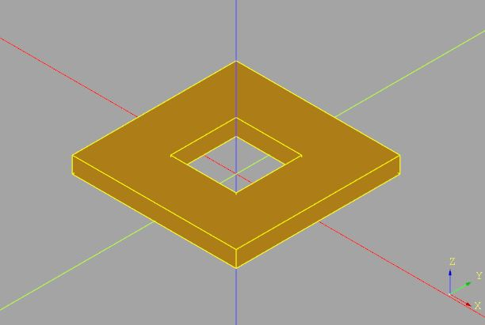
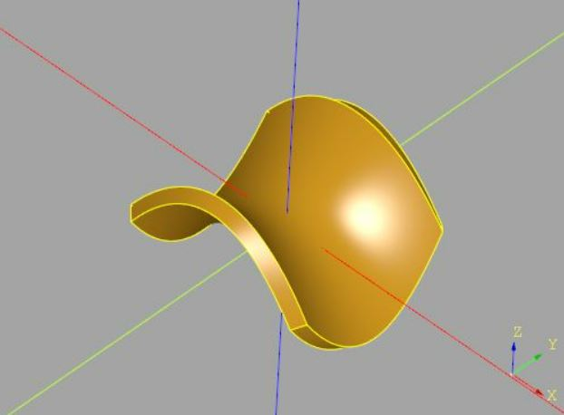

Hello, cqMore
November 27, 2021在先前的文件中，也開發了不少的函式，像是 polyhedron、surface、hull、轉換矩陣、sweep 等，如果可以將這些整理一下，作為一個程式庫，就不用每次想使用某個功能時，就得複製貼上相關的程式碼，而且程式碼也可以比較簡潔，專注在想解決的任務上。
為此，我開發了個 CadQuery plugin，我命名為 cqMore，有個 more 字的意思是「比 CadQuery 更多一點基礎功能」，除了將之前看過的函式整理了一下之外，也將一些使用 OpenSCAD 的經驗且適用於 CadQuery 的功能放進去。
OpenSCAD 與 CadQuery 兩者在方法與風格上並不相同，彼此並不是互斥選項，有些功能適合 OpenSCAD，有些適合 CadQuery。
安裝 cqMore
你可以從 Github 直接安裝 cqMore，為此，必須先有 git，如果沒有的話，可以如下安裝：
conda install git
接著安裝 cqMore：
pip install git+https://github.com/JustinSDK/cqMore
Workplane 擴充
除了 CadQuery，cqMore 目前沒有相依在其他的程式庫，想使用 cqMore，跟 CadQuery 一樣，基本上是從 Workplane 開始，這有兩種方式，其中一種是使用 cqmore.Workplane，它是 cadquery.Workplane 的子類別。例如：
from cqmore import Workplane
result = (Workplane()
.rect(10, 10)
.makePolygon(((-2, -2), (2, -2), (2, 2), (-2, 2)))
.extrude(1)
)
這邊使用了 cqmore.Workplane 定義的 makePolygon，它可以逆時針指定點座標來建立多邊形，也就是相當於〈認識 BREP〉中實作的 polygon 函式之作用，你會看到以下的結果：

你可能會說，這不符合 CadQuery 官方建議的 plugin 寫法啊？是沒錯！不過，我選擇繼承 cadquery.Workplane 的原因是開發上的便利性（特別是在配合 Python 的 Type hinting 方面），如果你不想直接使用 cqmore.Workplane，也可以透過 cqmore.extend 來擴充 cadquery.Workplane：
from cadquery import Workplane
import cqmore
cqmore.extend(Workplane) # 擴充 cqmore.Workplane
result = (Workplane()
.rect(10, 10)
.makePolygon(((-2, -2), (2, -2), (2, 2), (-2, 2)))
.extrude(1)
)
執行結果是相同的，基本上，cqMore 的 API Reference 中寫到的範例，都可以改用為 cqmore.extend 後，直接使用 cadquery.Workplane 來完成。
基本使用方式
各個 API 的使用方式，API Reference 中都可以查詢到相關說明，不過，這邊還是來示範幾個基本的使用，例如〈實作 polyhedron〉的正四面體：
from cqmore import Workplane
points = (
(5, -5, -5), (-5, 5, -5), (5, 5, 5), (-5, -5, 5)
)
faces = (
(0, 1, 2), (0, 3, 1), (1, 3, 2), (0, 2, 3)
)
solid = Workplane().polyhedron(points, faces)
在〈建立 Convex hull〉談到建立凸包，對於二維的凸包，可以使用 hull2D 方法：
from random import random
from cqmore import Workplane
points = [(random(), random()) for i in range(20)]
convex_hull = Workplane().hull2D(points)
對於三維的凸包，可以使用 hull：
from cqmore import Workplane
points = (
(50, 50, 50),
(50, 50, 0),
(-50, 50, 0),
(-50, -50, 0),
(50, -50, 0),
(0, 0, 50),
(0, 0, -50)
)
convex_hull = Workplane().hull(points)
在〈建立網格面〉中談到，cadquery.Workplane 本身的 parametricSurface 沒有厚度選項，為此，我建立了一個 splineApproxSurface，可以指定控制點來建立曲面，而且可以指定厚度，例如，來建立一個鞍型曲面：
from cqmore import Workplane
def paraboloid(x, y):
return (x, y, ((y ** 2) - (x ** 2)) / 4)
min_value = -30
max_value = 30
step = 5
thickness = 0.5
points = [[
paraboloid(x / 10, y / 10)
for y in range(min_value, max_value + step, step)
] for x in range(min_value, max_value + step, step)]
surface = Workplane().splineApproxSurface(points, thickness)
這會得到以下的結果：

這邊先介紹一些基本的功能，其他 API 逐一介紹，沒有太大的意義，基本上 API Reference 都有寫，我會配合後續的文件主題適當地使用…